4. Large Language Models
AI Agenter og automatisering
Agenda
- Follow up from last time…
- Assignment
- AIs historie
- LLMer
AI Agent
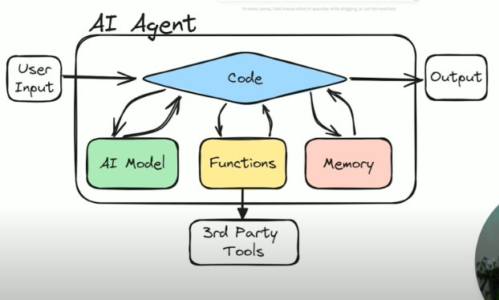
Prompt (User Message)
- The prompt or the user message is the input to the AI agent
- This is the request to the agent
- It does not have to be a human
- It can be other systems and even other agents

System message
- System messages (also called System Prompts) define how the model should behave.
- This is where you can get the agent to talk like a pirate – or something more useful

Assignments
- Feedback
- Pet projects?
AI history
The term Artificial Intelligence was coined in 1956.
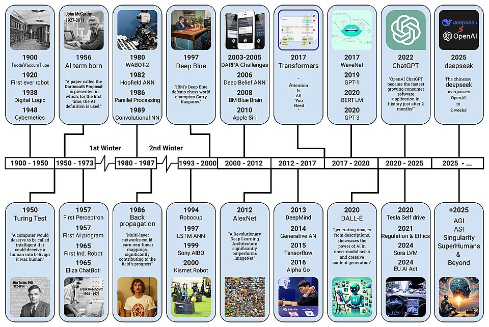
Turing test
- The Turing Test is a test for a machine’s ability to exhibit human-like intelligence.
- Proposed by Alan Turing in 1950
- It involves a human interrogator having text-based conversations with both a human and a machine.
- If the interrogator cannot reliably tell the machine from the human, the machine is considered to have passed the test.
- The test is designed to assess whether a machine can “think” by successfully imitating human conversation (originally called the “Imitation game”)
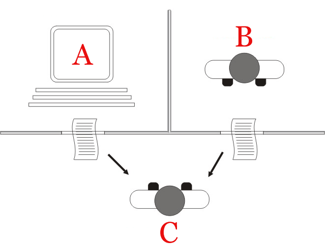
Perceptron in the 1950s
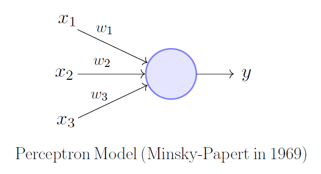
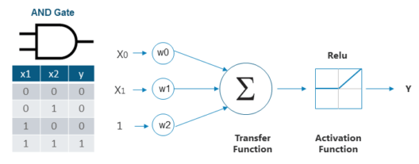
Try it out
Multi-layer
- Multi-layer perceptrons (MLPs) are necessary because single-layer perceptrons are limited to solving only linearly separable problems, such as classifying data that can be separated by a single straight line.
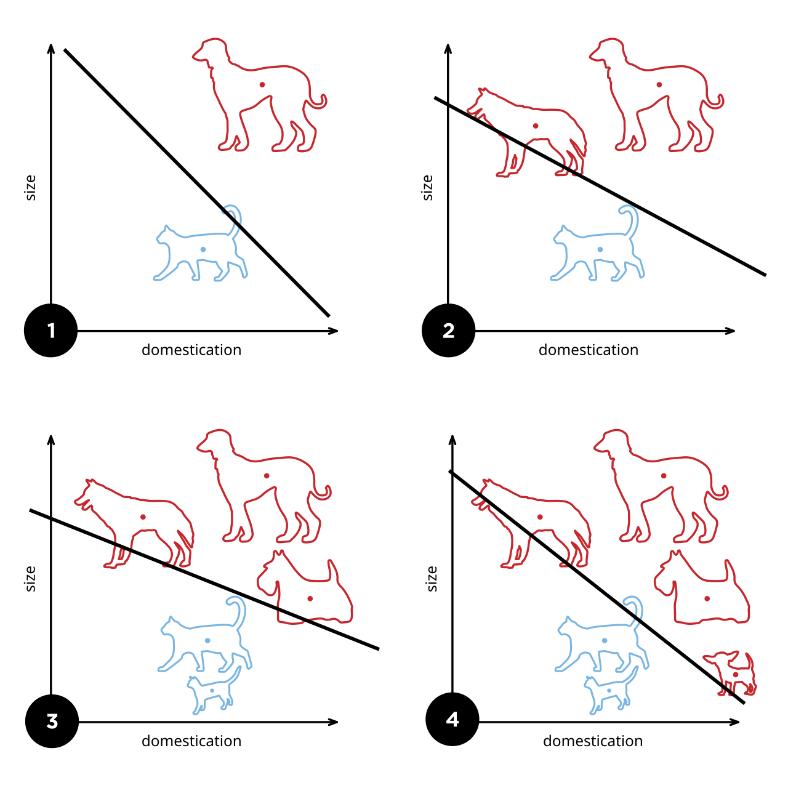
New set of problems can be solved
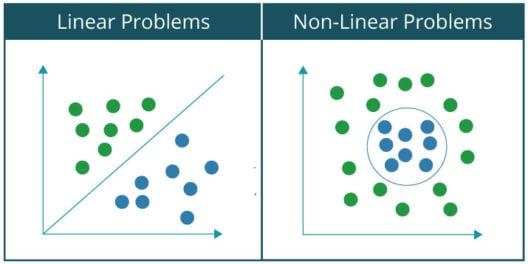
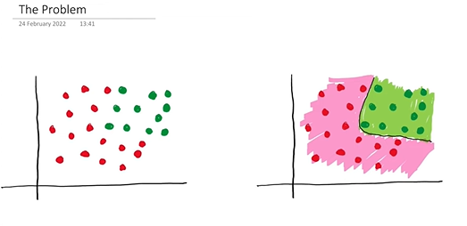
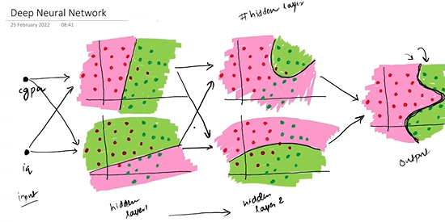
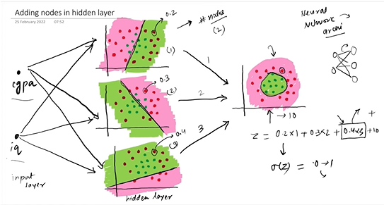
We add hidden layers
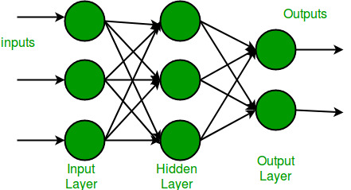
How to train neural networks
Back propagation (1986)
- A computer can learn from its mistakes (training)
- Backward propagation of errors
- An algorithm for supervised learning of artificial neural networks using gradient descent
- Created by Geoffrey Hinton
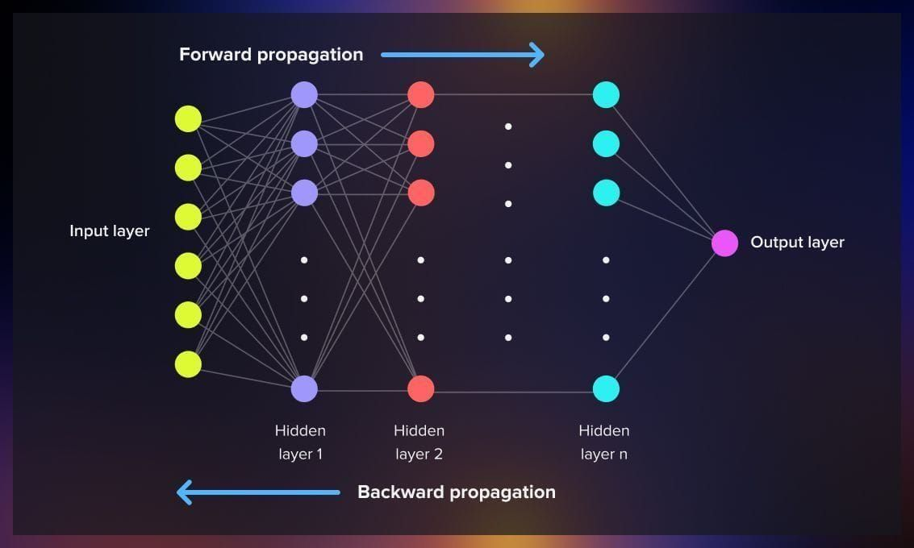
How to Train a Neural Network
- Initialize Weights: Start by assigning small, random values to all weights in the network.
- Forward Propagation: Feed the network a known input to produce an output or a prediction.
- Calculate Loss: Compare the network’s output to the correct output to determine the error.
- Backpropagation & Weight Adjustment: Calculate how much each weight contributed to the error, and adjust the weights to reduce this error.
- Iterate: Repeat this process many times, allowing the network to gradually improve its accuracy by continuously refining its weights.
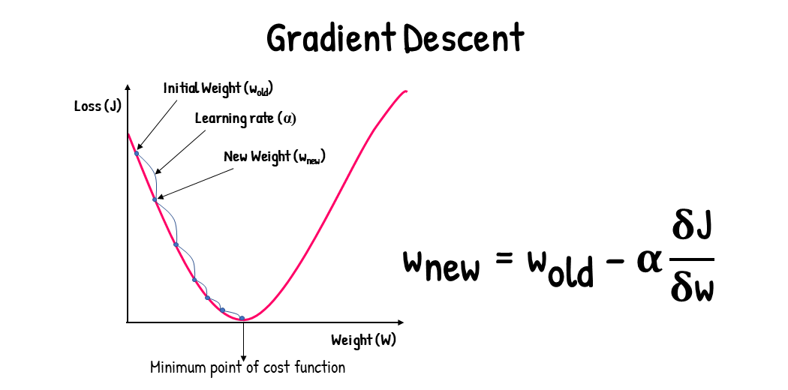
Local vs global
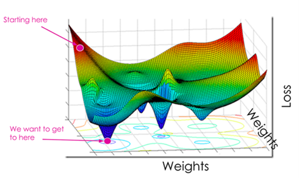
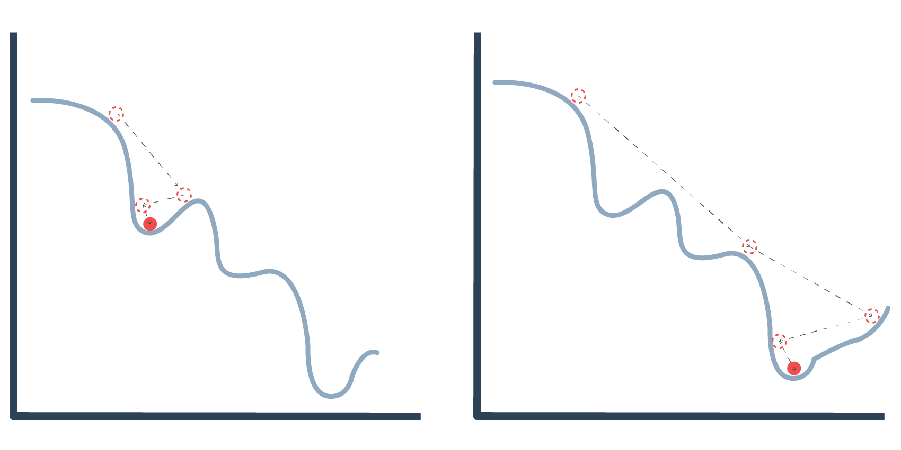
Logic Gate Truth Tables
AND
| A | B | Out |
|---|---|---|
| 0 | 0 | 0 |
| 0 | 1 | 0 |
| 1 | 0 | 0 |
| 1 | 1 | 1 |
OR
| A | B | Out |
|---|---|---|
| 0 | 0 | 0 |
| 0 | 1 | 1 |
| 1 | 0 | 1 |
| 1 | 1 | 1 |
XOR
| A | B | Out |
|---|---|---|
| 0 | 0 | 0 |
| 0 | 1 | 1 |
| 1 | 0 | 1 |
| 1 | 1 | 0 |
Perceptron exercise
Use different layouts to solve XOR and NOR
Set up a dataset, train it and see how the weights evolve
Training Neural Networks
1997 IBM’s Deep Blue
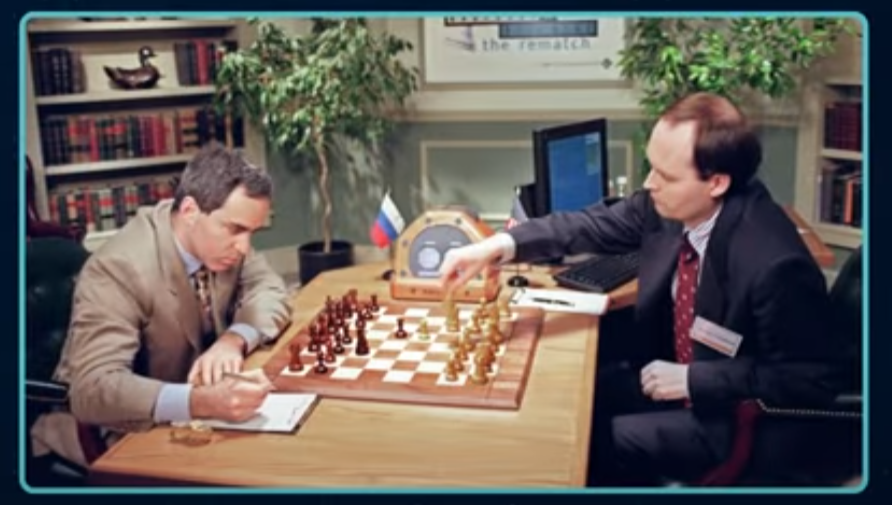
Gary Kasparov lost in chess to IBM’s Deep Blue
AI, but not neural networks
A* and search trees used with advanced heuristics
A* algorithm
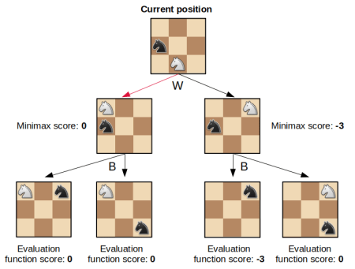
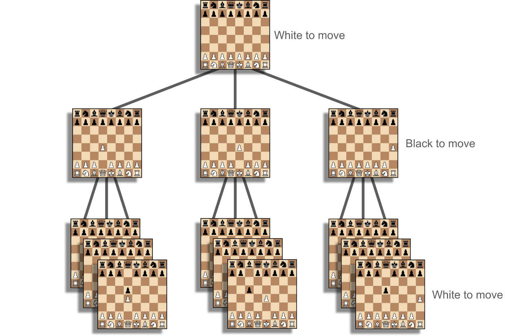
Deep learning (2006)
- Deep learning is a specialized subfield of artificial intelligence (AI) and machine learning (ML)
- It uses complex, multi-layered artificial neural networks to automatically learn intricate patterns from vast amounts of data, mimicking how the human brain processes information.
- The “deep” in deep learning refers to the numerous hidden layers within the network—typically three or more, but often hundreds.
- Inspired by how the brain works
- Neurons and synapses
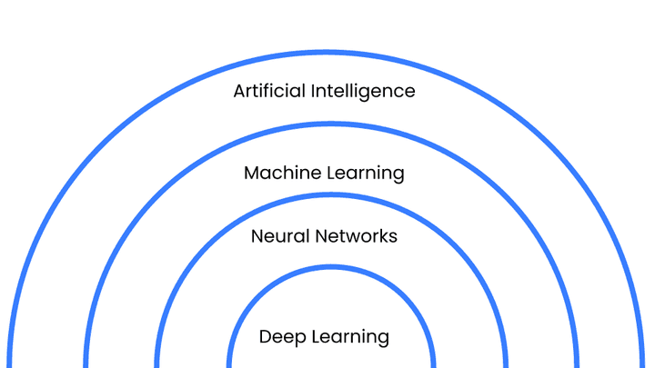
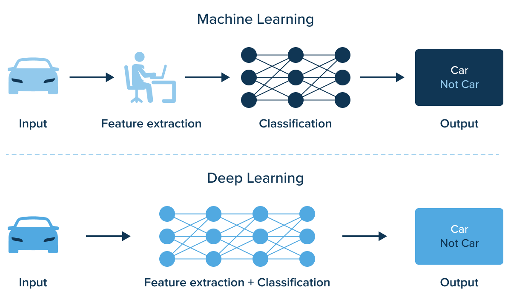
IMAGE-NET (2010)
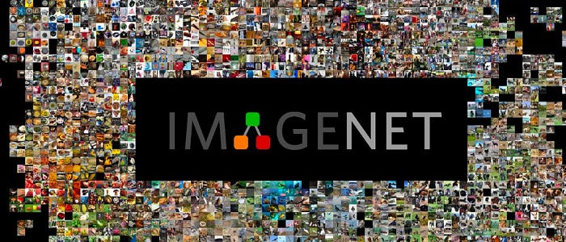
Competition to recognize images
More than 14 million images were hand-annotated to indicate what objects are pictured
IBM’s Watson AI wins in “Jeopardy!” (2011)
The computer “understands” human language
Deep neural networks (2012)
- Paper by Jeff Dean and Andrew Ng
- Unsupervised neural networks
- “We can recognize a cat”
- The AlexNet
- The “Big Bang” of AI
- Nvidia GPUs are being used for AI
DeepMind (owned by Google)
- Wins in “GO” - thought this would have been impossible for decades to come
- A* like algorithm with neural network for pruning and assessments
- See “AlphaGo” video (2016)
- Later on we get AlphaFold for medical work (https://www.youtube.com/watch?v=P_fHJIYENdI)
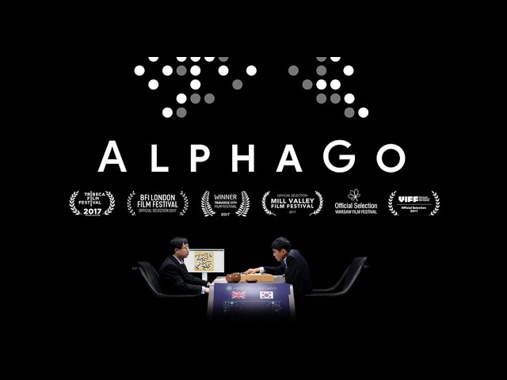
Transformers (2017)
- 2017 paper “Attention Is All You Need” by Google researchers
- GPT = Generative Pre-trained Transformer
- Problem: Previous models processed text sequentially, word by word, which made it challenging for them to maintain context over long sentences and limited their ability to be parallelized for faster training
- https://poloclub.github.io/transformer-explainer/
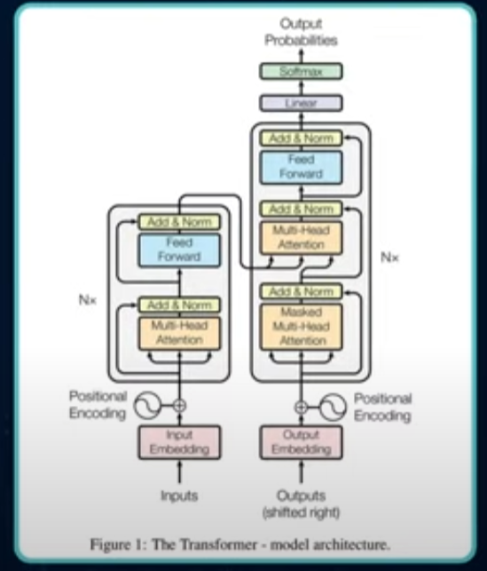
Self-Attention
- Self-attention allows a model to weigh the importance of different words in a sentence when processing a particular word
- For example: “The robot picked up the red ball because it was the right color,”self-attention helps the model understand that “it” refers to the “ball” and not the “robot.”
- For each word, the model can “look” at all other words in the input sequence and determine which ones are most relevant to understanding its meaning in that specific context
- This ability to capture relationships between words, regardless of their distance from each other in the sentence, is a key advantage over sequential models
Encoder and decoder
Encoder (left): The encoder receives an input and builds a representation of it (its features). This means that the model is optimized to acquire understanding from the input.
Decoder (right): The decoder uses the encoder’s representation (features) along with other inputs to generate a target sequence. This means that the model is optimized for generating outputs.
Try it out…
OpenAI GPT1 (2018)
OpenAI uses transformers to build LLMs (GPT1, 2,…)
ChatGPT (late 2022)
- User-friendly chatbot is introduced
- Generative AI becomes huge “overnight”
What are Large Language Models?
Neurale netværk
- Billions of parameters
- Inputs
- Weights
- Etc.
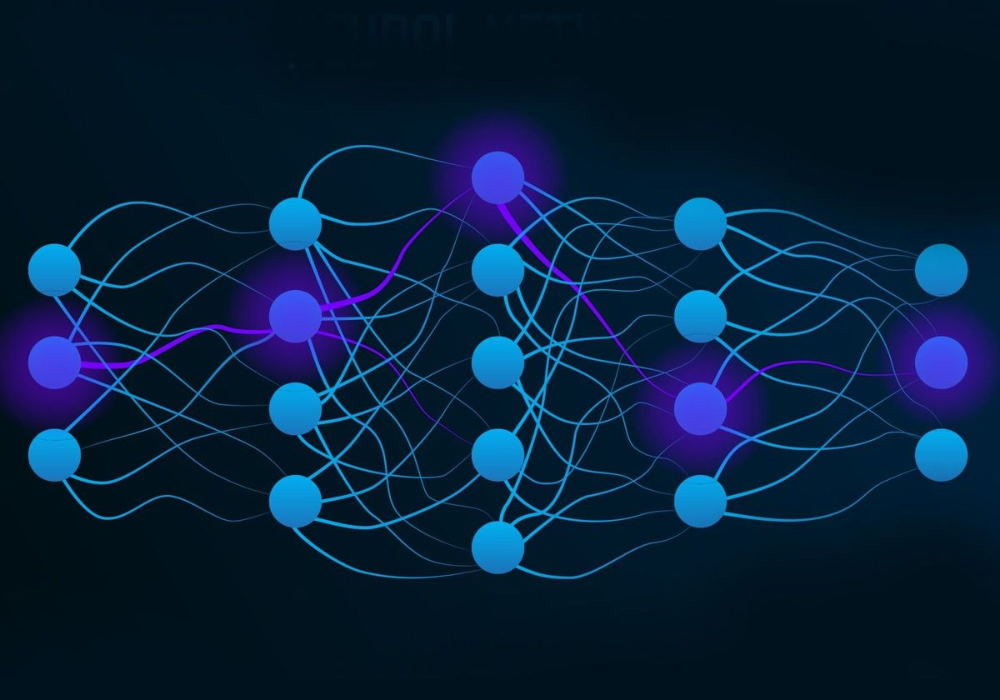
LLMs guess the next word
- A LLM is trained to guess the next most likely word
- It is making qualified “guesses”
- Sometimes it guesses “wrong”
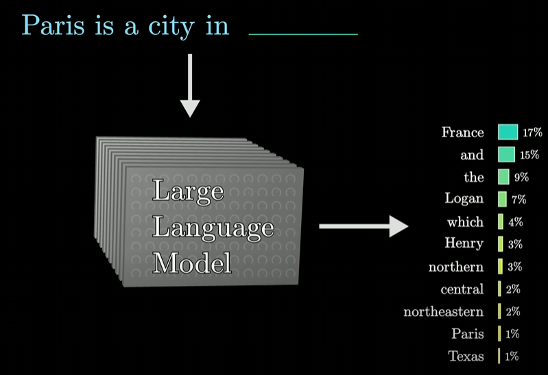
Training data
- Text from the internet
- Uses trillions of examples
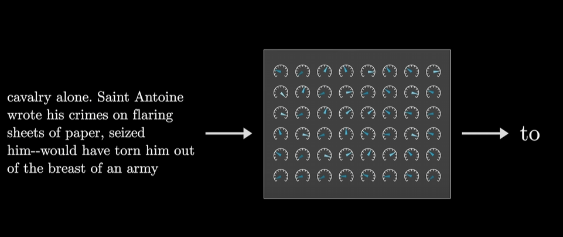
Training
- Use back propagation (and other techniques) to find weights
- Takes months to train the biggest models (cost +10 million dollars per model)
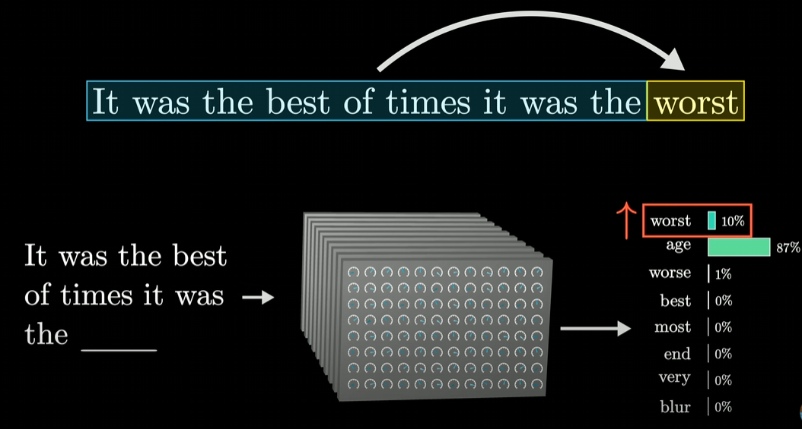
Guesses unseen words not in training data
LLMs find a lot of patterns in the texts and can guess words it has not seen before
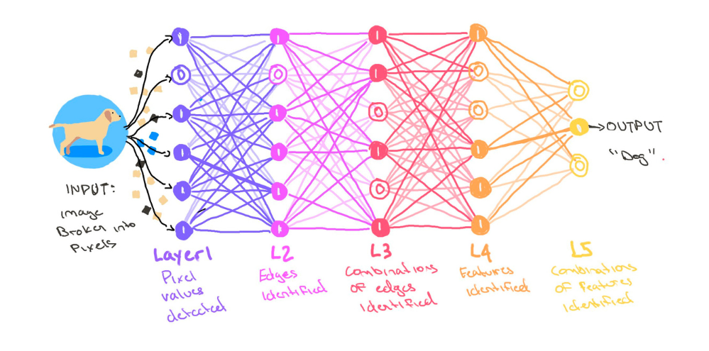
ChatBot training
- Reinforcement learning with Human Feedback
- Use humans’ feedback to improve the model’s parameters
Hardware
- Runs (best) on GPUs
- Nvidia’s CUDA
- One of history’s biggest infrastructure projects in the 500 billion dollar area
Emergent Abilities
- Capabilities that are not explicitly programmed into the models
- But spontaneously appear as the models are scaled up in size, data, and computational power
- Sudden and unpredictable leap in performance on specific tasks
- Examples:
- Complex Reasoning and Arithmetic
- Code Generation
- Answering Questions and Summarization
- Chain-of-Thought Prompting
Pre-training
Training to create the original model – the model you download
Fine-tuning
- Change some layers in the LLM
- You train e.g. the last 2-3 layers of the model with data from your specific use case
- Faster to re-train an existing model than starting from scratch
- Can make the model specialized for your use
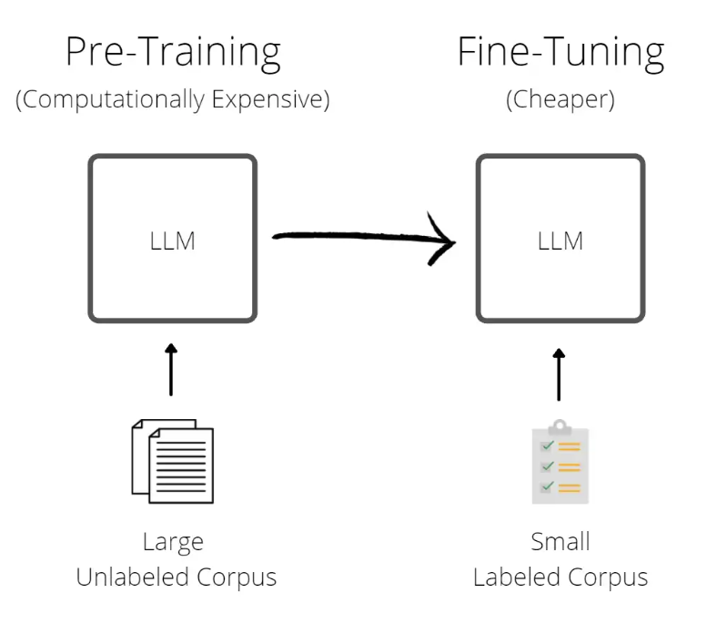
Tokenization and the Token Window
- LLMs don’t use words but break down text into smaller units called tokens
- Tokens are whole words or a part of a word
- “Amoral” might be 2 tokens “a” and “moral”
- The context window is the maximum number of tokens an LLM can “remember” or consider at one time when generating a response
- “It is the input layer to the neural network”
- A 100K context window can approximately contain 75k words
“Thinking” - From Simple Prediction to Complex Reasoning
- A technique where the model is prompted to “think step by step,” breaking down a complex problem into intermediate reasoning steps before arriving at a final answer.
- This ability to follow a logical chain of thought is significantly more pronounced in larger models.
- This is what we use for our AI Agents
LLM limitations
- Hallucinations : LLMs can generate plausible but incorrect or nonsensical information.
- Bias : They can reflect and amplify biases present in their training data.
- Lack of True Understanding : At their core, LLMs are probabilistic models predicting the next token; they do not possess true consciousness or understanding in the human sense.
- Computational Cost : Training and deploying large-scale LLMs requires significant computational resources.
Temperature
- Temperature is a key parameter that controls the randomness of an LLM’s output.
- It’s a value, typically between 0 and 2, that you can set when you make a request to the model.
- Think of it as a dial for creativity.
- Low Temperature (e.g., 0.1 to 0.5): With a low temperature, the model becomes more deterministic and conservative.
- High Temperature (e.g., 0.8 to 1.5): A higher temperature increases the chances of the model selecting less likely tokens.
More temperature
- Not True Creativity : While a higher temperature can lead to more novel-sounding outputs, it’s not the same as human creativity. It’s simply increasing the mathematical randomness of the word selection.[10][15] The model’s inherent creativity is more tied to its architecture and training data.[15]
- Risk of Incoherence : Pushing the temperature too high can result in nonsensical or “hallucinated” outputs that don’t make sense.[7]
- Finding the Balance : The right temperature setting depends entirely on the task at hand. For a reliable AI agent performing a predictable task, a low temperature is generally preferred.[10] For an agent designed to brainstorm or explore possibilities, a higher temperature might be more appropriate.[9]
Top-K Sampling
- Definition: Filters the probability distribution to keep only the top k most likely tokens.
- Process:
- Sort all possible next words by their probability.
- Keep only the top k options (e.g., if k=40, only the 40 most likely words are considered).
- Redistribute the probability mass among these k tokens.
- Randomly sample the next word from this restricted set.
- Impact:
- Pros: Very simple and prevents the model from picking completely nonsensical “long-tail” words.
- Cons: It is not adaptive. If the model is very confident (one word is 99%), it still looks at the other 39. If the model is uncertain, it might cut off valid, high-quality choices.
Top-P (Nucleus) Sampling
- Definition: A dynamic approach that selects the smallest set of tokens whose cumulative probability exceeds a threshold p.
- Process:
- Sort all possible next words by probability.
- Add words to a “nucleus” one by one until their combined probability reaches p (e.g., p=0.9 or 90%).
- The number of words in the set grows or shrinks based on the model’s confidence.
- Sample the next word only from this “nucleus.”
- Impact:
- Pros: Adaptive. When the model is confident, the set is small (maybe 1 word); when it’s confused, the set is large.
- Cons: Harder to predict exactly how many options the model will have at any given step.
- Often considered superior to Top-K for maintaining a natural and creative “flow” in conversation.
Øvelse
- Vi bruger LLMer til vores agenter
- Hvilken betydning har LLMerne ” sandsynligheds -element” for hvad vores agenter kan gøre og hvilke svar vores agenter kan give os ?
- Tag gerne jeres erfaringer med ChatBots med ( ChatGPT , Claude, etc.)
- Forbered et svar til resten af klassen
- Tænk selv i 5 minutter
- Diskuter dine tanker med 1-2 andre personer (5 min)
Overvej
Deterministisk vs. Sandsynligheder
- Forskellen på “at vide” og “at gætte”
Træningsdata
Hvad ved LLMen ?
“Bias”?
Hvor eksekveres modellen ?
Hvem får vores data? Er det ok?
Assignment
- Write max 1 page about:
- the functionality of LLMs
- Pros and cons with LLMs
Prompt engineering
Prompt engineering
How to instruct our LLMs and Agents – next time
Prompting AI Agents
There is no “single way” to do this
The LLMs are different
Size/typography
Training
The tasks at hand are different
A structure for AI Agent prompts
Roles
Tasks
Requirements
Instructions
Role
Defines the persona the model should adopt. Influences tone, knowledge, and style.
“Act as a senior software architect.”
Task
The specific, clear objective for the model.
“Outline a project plan for a new microservices application.”
Requirements
Conditions that dictate the output’s format and constraints.
“The outline should be a numbered list with a maximum of five top-level items.”
Instructions
Guidance on how to execute the task. Provides intermediate steps or examples.
“For each microservice, provide a brief description and a list of its core dependencies.”
A good prompt

Ollama
- Ollama = Local LLM server for running models like LLaMA , Mistral, Gemma.
- Ollama is an open-source framework that lets you run and manage large language models ( LLMs ) directly on your local machine , providing privacy , control , and offline AI capabilities .
Quantization
- Less precision of weights (prune the neural network)
- “Smaller model” that can fit in less RAM
- Less precision of the models
- Does not ecessarily degrade “performance” of the model significantly
What to Remember
- LLMs are neural networks that predict the next token from patterns in huge datasets.
- Better prompting gives better outputs: define role, task, requirements, and clear instructions.
- Outputs are probabilistic, not facts: verify important answers.
- Temperature and sampling settings control creativity vs. reliability.
- Model quality, context window, and hardware constraints shape what your agent can do.